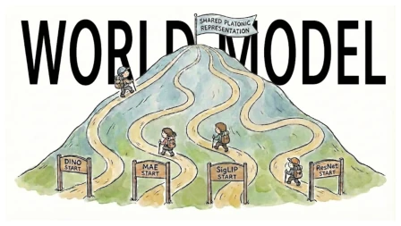
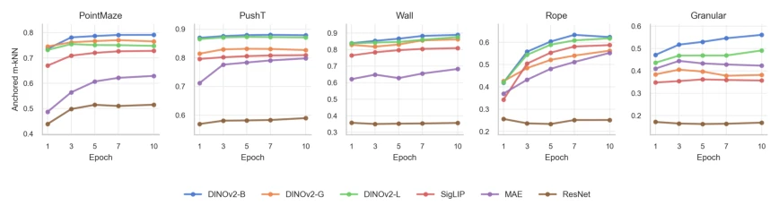
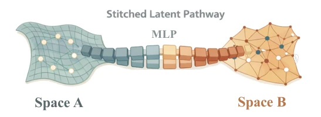
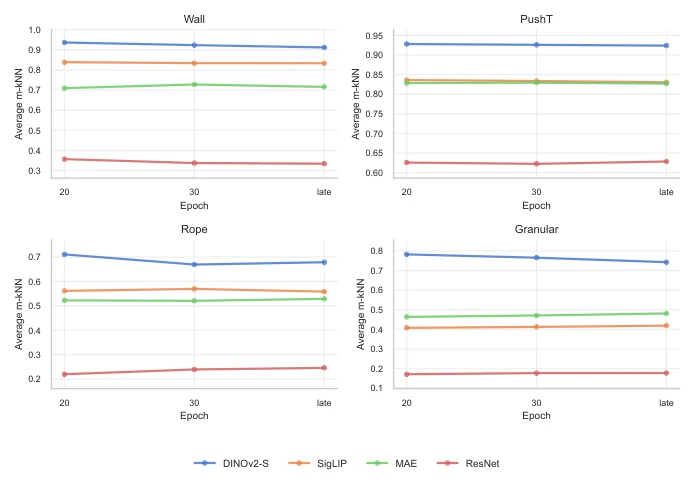
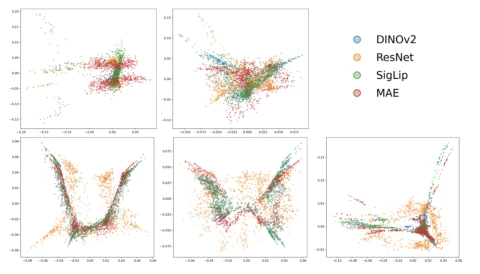
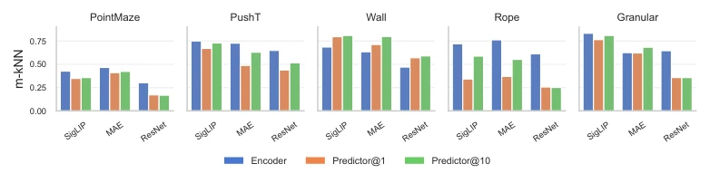
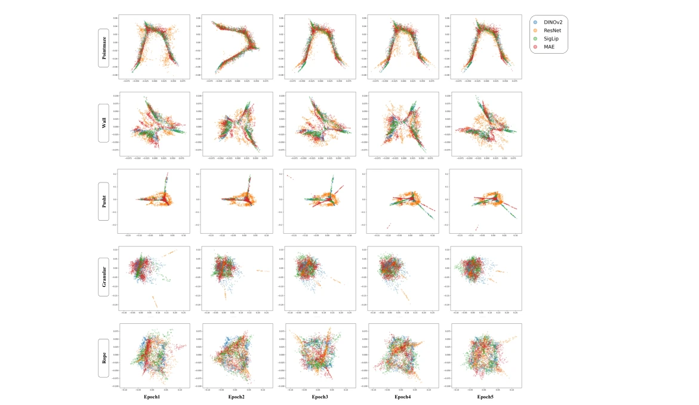
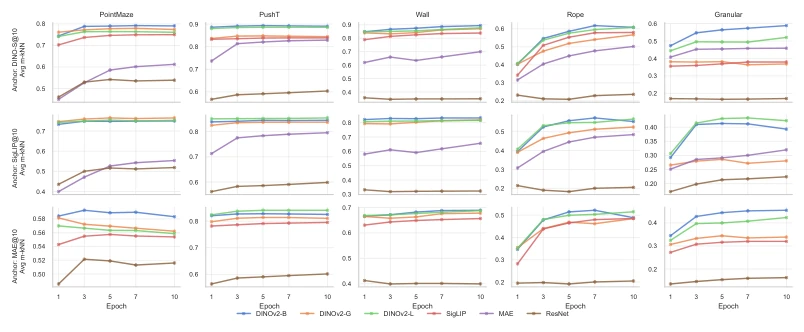

这篇论文试图将“柏拉图表示假设”（PRH）从静态视觉领域拓展到具身世界的动态建模中。作者声称预测一致性会迫使不同架构的模型收敛到共享的潜在结构。亮点在于用模型缝合（Model Stitching）验证了功能兼容性，而非仅仅几何相似。但槽点也很明显：实验全在仿真环境，且视觉编码器是冻结的，这限制了结论对真实具身系统的普适性。此外，ResNet 与 ViT 的架构鸿沟比预期更难跨越，所谓的“柏拉图理想”可能只是 Transformer 架构的某种特化，而非物理世界的真理。这种“操作性的锚点”定义也削弱了理论深度，毕竟 DINOv2-S 只是性能好的模型，未必是物理规律的唯一解。
This paper attempts to extend the "Platonic Representation Hypothesis" (PRH) from the static vision domain to dynamic modeling in the embodied world. The authors claim that prediction consistency will force models of different architectures to converge to shared latent structures. The highlight lies in verifying functional compatibility using Model Stitching, rather than merely geometric similarity. However, the drawbacks are also obvious: experiments are all in simulation environments, and visual encoders are frozen, which limits the generalizability of conclusions to real embodied systems. Furthermore, the architectural gap between ResNet and ViT is harder to bridge than expected; the so-called "Platonic ideal" might just be a specialization of the Transformer architecture, rather than the truth of the physical world. This definition of "operational anchor" also weakens the theoretical depth, after all, DINOv2-S is just a high-performance model, not necessarily the unique solution to physical laws.
研究动机Motivation
现有研究 [Huh et al., 2024] 已证实静态视觉和语言模型存在表示收敛，但世界模型（World Models）需内化物理动态，这一假设是否成立尚属空白。现有世界模型 [Zhou et al., 2024] 虽性能优异，但其内部表征的本质仍未被理解。本文旨在填补这一科学缺口，探究在相同环境动态下，不同视觉先验是否会被预测目标驱动至统一表示。若成立，将证明具身预测系统存在某种“物理真理”的隐式编码，这对模型泛化与迁移至关重要。
Existing research [Huh et al., 2024] has confirmed that static vision and language models exhibit representation convergence, but whether this hypothesis holds for World Models that need to internalize physical dynamics remains unexplored. Although existing World Models [Zhou et al., 2024] perform excellently, the essence of their internal representations remains ununderstood. This paper aims to fill this scientific gap, exploring whether different visual priors will be driven to unified representations by prediction targets under the same environmental dynamics. If established, it will prove that embodied prediction systems contain an implicit encoding of some "physical truth", which is crucial for model generalization and transfer.

Figure 1: The Platonic Representation Hypothesis on World Models. World models initialized from heterogeneous visual priors are optimized under the same transition objective (st →st+1). Predictive consistency acts as a selective pressure that can drive their internal predictor representations toward a shared latent structure.
方法Method
基于 DINO-WM 架构，构建异构世界模型。数据流：视觉编码器（DINOv2, SigLIP, MAE, ResNet）提取特征 -> 预测器（Transformer）学习状态转移。核心创新是“预测一致性假设”，即优化状态转移目标作为选择压力。评估分两步：几何分析用 Mutual k-NN 衡量潜在拓扑相似性；功能分析用模型缝合，冻结部分层并训练轻量 MLP 适配器，评估规划成功率（SSR）。预测器采用 6 层 Decoder-only ViT，处理 patch 嵌入，利用因果注意力机制捕捉时序依赖。具体而言，Transformer 深度为 6 层，16 个注意力头，MLP 隐藏维度 2048。动作向量经 MLP 投影后拼接至视觉 patch 嵌入。缝合协议中，将两个模型的预测器栈在深度 k 处切断，中间插入两层 MLP 适配器，仅训练适配器参数，其余冻结。通过比较缝合后的规划表现，判断潜在空间是否包含可交换的规划因子。此外，还测试了缝合的方向性，即 A 接 B 与 B 接 A 的差异，以验证功能互换性。
Based on the DINO-WM architecture, heterogeneous world models are constructed. Data flow: Visual encoders (DINOv2, SigLIP, MAE, ResNet) extract features -> Predictor (Transformer) learns state transitions. The core innovation is the "Prediction Consistency Hypothesis", i.e., optimizing state transition targets as selection pressure. Evaluation is divided into two steps: geometric analysis uses Mutual k-NN to measure latent topological similarity; functional analysis uses Model Stitching, freezing some layers and training a lightweight MLP adapter to evaluate planning success rate (SSR). The predictor adopts a 6-layer Decoder-only ViT, processing patch embeddings, utilizing causal attention mechanisms to capture temporal dependencies. Specifically, Transformer depth is 6 layers, 16 attention heads, MLP hidden dimension 2048. Action vectors are projected via MLP and concatenated to visual patch embeddings. In the stitching protocol, the predictor stacks of two models are cut at depth k, with two-layer MLP adapters inserted in between, training only adapter parameters, freezing the rest. By comparing planning performance after stitching, judge whether the latent space contains exchangeable planning factors. Additionally, the directionality of stitching is tested, i.e., the difference between A connecting to B and B connecting to A, to verify functional interchangeability.

Figure 3: Evolution of Geometric Similarity toward the Platonic Anchor. Plots showing the Anchored m-kNN Similarity Score (Y-axis) vs. Training Epoch (X-axis) across five environments. The DINOv2-S World Model (10-epoch checkpoint) serves as the fixed reference Anchor. Results: Models initialized with DINOv2-B/G/L (blue/orange/green) exhibit the highest degree of alignment. Meanwhile, MAE (red) and SigLIP (brown) models demonstrate a distinct upward trend in similarity scores across most tasks, indicating progressive convergence. In contrast, the ResNet-based model (pink) consistently yields the lowest scores, suggesting a persistently different representational topology from the ViT-based Anchor in our setting.

Figure 7: Representation stitching. We splice predictor stacks at depth k and train only lightweight MLP adapters to map between feature spaces while freezing all other parameters.

Figure 9: Longer-training stability of anchored m-kNN. We evaluate DINOv2-S, SigLIP, MAE, and ResNet at later checkpoints using DINOv2-S@10 as the reference. Later training does not uniformly increase alignment, but the broad relative structure remains stable: DINOv2-S stays highest, SigLIP and MAE form a middle tier, and ResNet remains least aligned in Wall, Rope, and Granular. The x-axis label “late” denotes epoch 50 for most runs and epoch 49 for two PushT runs.
实验Experiments
在 PointMaze, PushT, Wall, Rope, Granular 等 5 个仿真环境测试。基线包括不同视觉编码器初始化。指标为 m-kNN 相似度和规划成功率。发现 ViT 类模型（DINOv2, SigLIP, MAE）随训练收敛，ResNet 则保持拓扑差异。缝合实验显示高质量模型间可互换部分层，证明功能兼容性。ResNet 始终无法对齐，表明架构偏差难以通过训练消除。锚点敏感性分析表明，虽然绝对分数随锚点变化，但 ViT 类模型间的相对对齐结构稳定。长期训练（Epoch 20-50）显示对齐结构并未单调增加，但相对排序保持稳定。这表明收敛并非简单的线性过程，而是受环境动态和架构共同影响。
Tested in 5 simulation environments such as PointMaze, PushT, Wall, Rope, Granular. Baselines include different visual encoder initializations. Metrics are m-kNN similarity and planning success rate. It is found that ViT-class models (DINOv2, SigLIP, MAE) converge with training, while ResNet maintains topological differences. Stitching experiments show that parts of layers can be interchanged between high-quality models, proving functional compatibility. ResNet always fails to align, indicating architectural bias is hard to eliminate through training. Anchor sensitivity analysis shows that although absolute scores vary with anchors, the relative alignment structure among ViT-class models is stable. Long-term training (Epoch 20-50) shows that alignment structure does not monotonically increase, but relative ranking remains stable. This indicates convergence is not a simple linear process, but is jointly influenced by environmental dynamics and architecture.

Figure 4: Visualizing Representational Alignment via Spectral Embeddings. We illustrate the geometric structure of predictor hidden states using Laplacian Eigenmaps for five control environ- ments: Granular, Rope, PointMaze, Wall, and Push-T. Internal representations from heterogeneous vision priors are projected into a low-dimensional space and aligned to the DINOv2 anchor via Procrustes transformation. In the bottom row (PointMaze, Wall, Push-T), a clear pattern of geometric similarity emerges among the transformer-based priors (DINOv2, SigLIP, and MAE), while the ResNet prior (orange) exhibits clear topological misalignment. In the top row, Granular displays a noisier convergence pattern, whereas the Rope environment manifests as a highly concentrated cluster across all models, reflecti

Figure 5: Encoder-space baseline versus predictor-space alignment. For each environment, we compare m-kNN alignment between DINOv2-S and each candidate model in raw encoder space, predictor space at epoch 1, and predictor space at epoch 10. The drop from Encoder to Predictor@1 shows that the predictor does not simply inherit encoder geometry. The recovery from Predictor@1 to Predictor@10 then indicates that transition-prediction training induces a new cross-model alignment in predictor space.

Figure 10: kNN flow-matching visualization of predictor layer3 features across epochs. We use the DINO predictor at epoch 10 as the anchor and visualize kNN correspondences in a 2D embedding. Across epochs, several feature distributions become more overlapping with the DINO anchor, while the trajectories remain task- and model-dependent; predictors with stronger planning performance often exhibit more similar distributions.
其他图片Other Figures

Figure 8: Anchor sensitivity analysis. We recompute anchored m-kNN trajectories using DINOv2- S@10, SigLIP@10, and MAE@10 as reference anchors, excluding trivial self-anchor trajectories. While absolute scores and some local rankings vary with the anchor, the qualitative pattern remains stable: strong ViT-based predictors stay closer to one another, whereas ResNet is consistently less aligned in most environments. This suggests that the alignment trend is not unique to the DINOv2-S reference, although the anchor should still be interpreted as a performance-motivated reference rather than a true Platonic ideal.